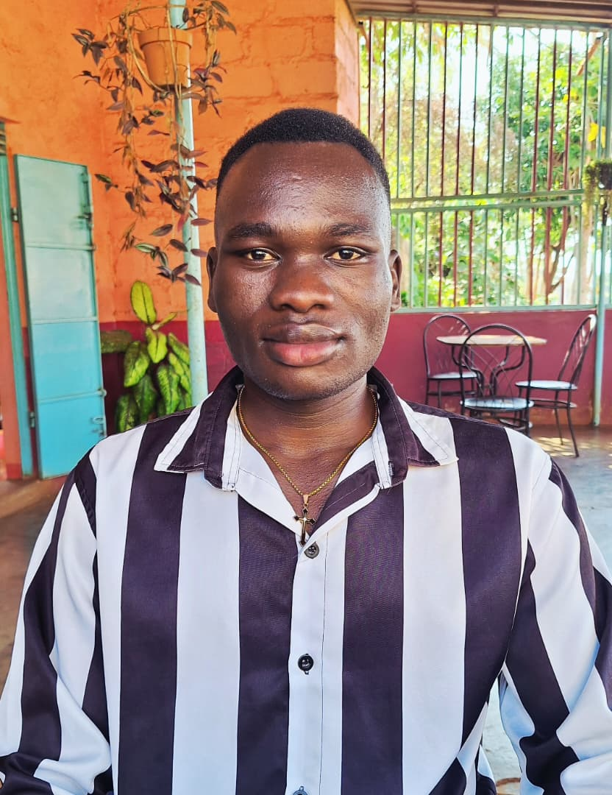

George Mike Okello | WDD 130
Hello! My name is George Mike Okello. I live in Uganda and I am currently studying online at BYU-Idaho. I enjoy learning web development, improving my coding skills, and exploring new technologies. I am excited to build my first course homepage and apply what I learn in WDD 130!